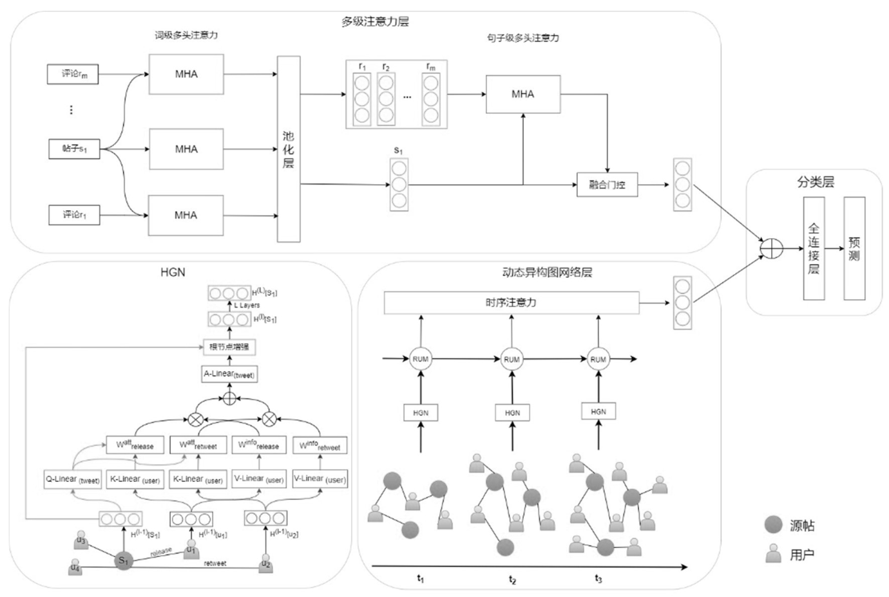
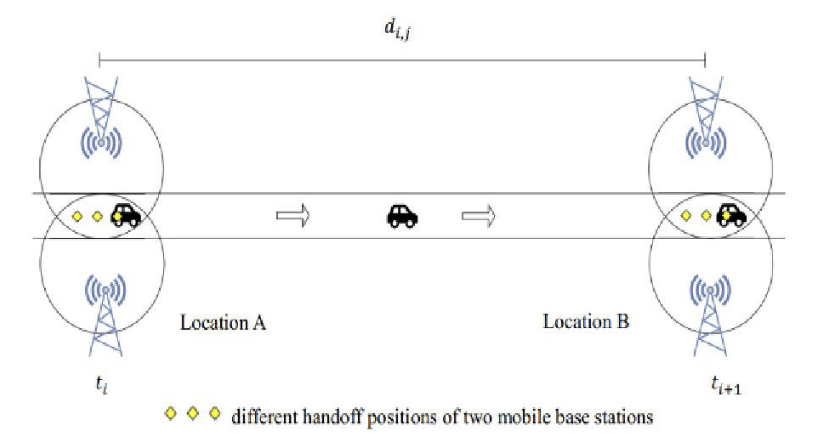
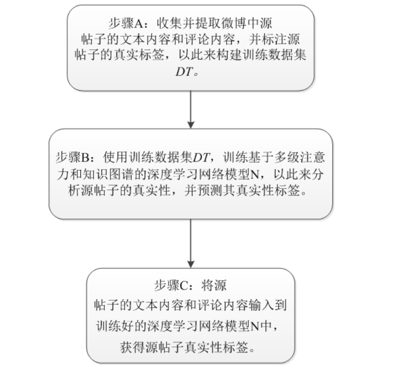
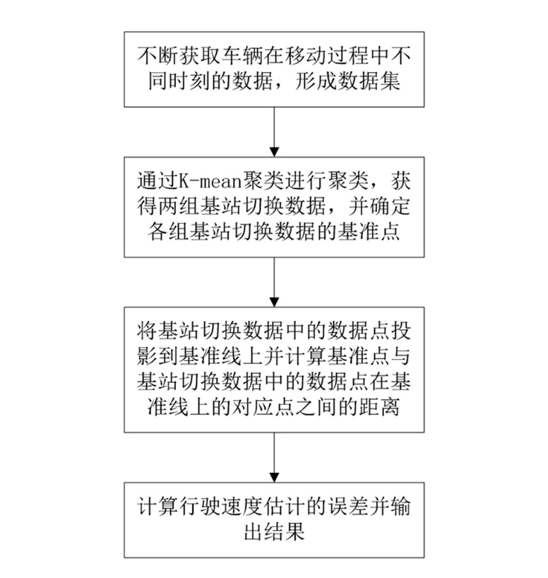
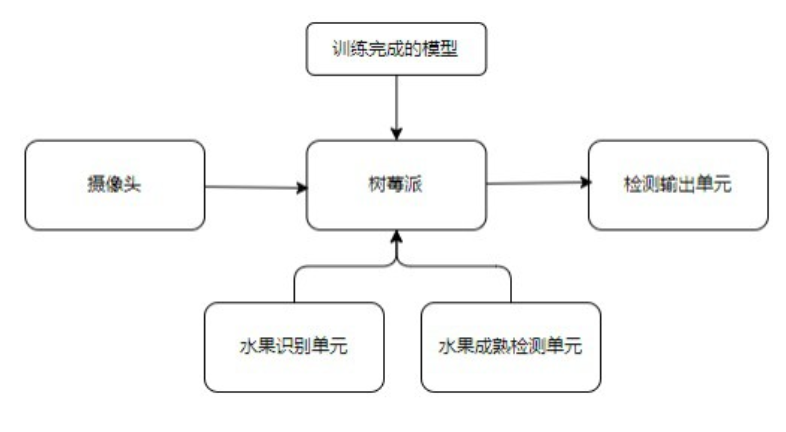
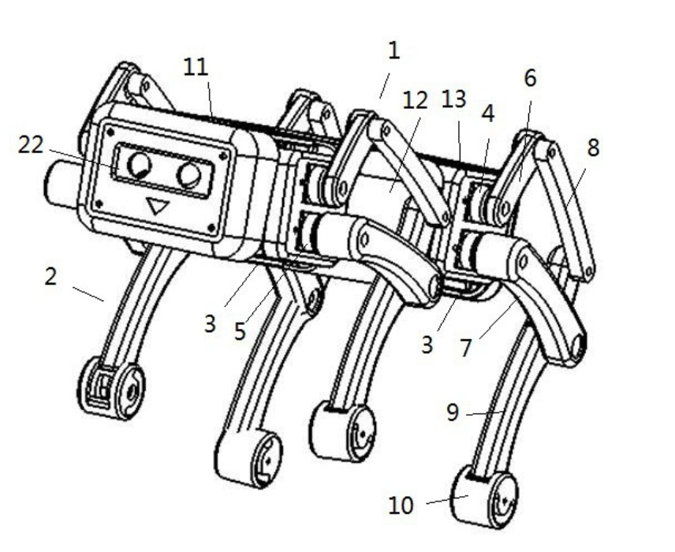

Mengyu Rao (饶孟宇)
|
Undergraduate Student |
About me
I am currently an undergraduate student at Fuzhou University.
Experience
-
BEng. in Software Engineering (July 2019 - Present)
Publications

|
A Dual-branch DeepFake Detection Focuses on Illumination Inconsistency (Under
Review)
Mengyu Rao, Wenbo Zhou, Weiming Zhang, Nenghai Yu |Paper| |
|  |
Rumor Detection Model Based on Dynamic Heterogeneous Graph Neural Network
(Accepted)
Wenlong Zhu, Yuzhong Chen, Mengyu Rao |Paper| |
|  |
Travel Spend Error Estimation Method based on Handoff Data (Accepted)
Mengyu Rao, Gaosheng Lin, Weiping Chen |Paper| |
Patents
|  |
Rumour detection method and system based on integrating emotion mining (Invention
Patent)
Yuzhong Chen, Wenlong Zhu, Mengyu Rao, Yujie Wan |Cnki Patent| |
|  |
Vehicle speed estimation error evaluation method and system based on base station
switching data (Invention Patent)
Weiping Chen, Mengyu Rao, Gaosheng Lin, Ruiquan Lin |Google Patent | Cnki Patent| |
|  |
Fruit ripening detection method and system based on YOLOv4 model and convolutional
neural network (Invention Patent)
Weiping Chen, Mengyu Rao, Jie Huang, Ruiquan Lin |Google Patent | Cnki Patent| |
|  |
Four-footed bionic robot dog (Utility Model Patent)
Weiping Chen, Mengyu Rao, Jie Huang, Ruiquan Lin |Google Patent | Cnki Patent| |